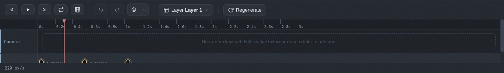
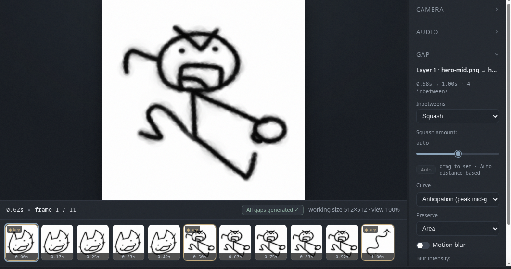
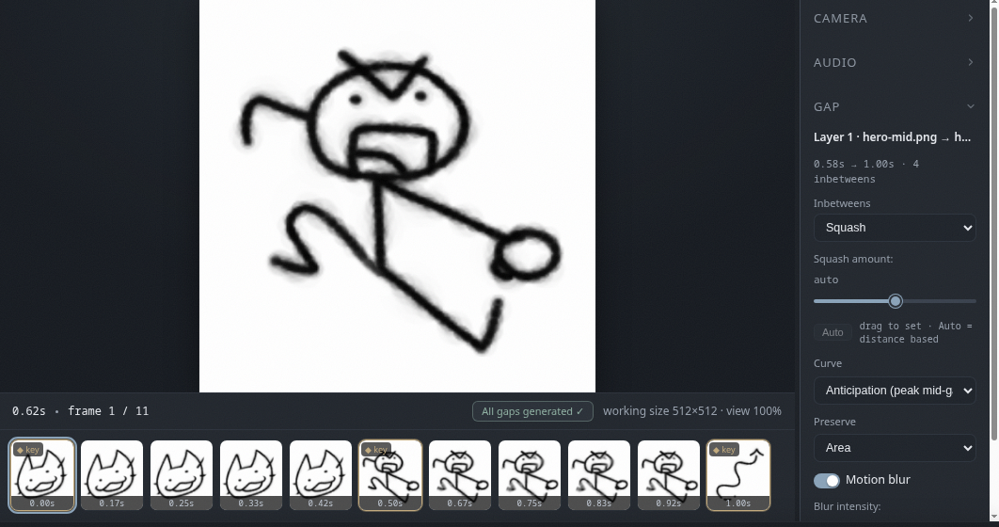

Gaps & inbetweens
Machine learning, squash and stretch, motion blur, regeneration, and when to skip it all.
What is a gap?
The space between two keyframes on the same layer is a gap. Click the gap chip on the timeline to open its options in the right panel; the inbetweens are generated there. This is where the magic happens (or the weirdness, depending on how different your keyframes are).

Machine learning
The default mode. A machine learning model generates the inbetween frames, which gives the most natural motion for complex art. This is Khuwari's party trick.
Squash and stretch
A stylized deformation for cartoon motion, so everything in between squishes and stretches with intent.
- Amount controls how strong the deformation is, or set it to auto for a distance based value.
- Curve picks the motion: anticipation (peak mid-gap), impact (builds to the end), ease (smooth) or linear.
- Preserve keeps area or volume constant while deforming.
The deformation travels with the motion: the object's centre walks the path between the two keyframes while it squishes and stretches, pivoting on its own centre at every frame.

No inbetweens
No inbetweens at all. The first keyframe simply holds until the next one starts. Perfect for flashes, cuts and text cards.
Motion blur
A per-gap toggle. When on, the inbetweens smear along their motion, and the blur eases in and out with the movement.
- The intensity slider controls how strong the smear is.
- It is also a great way to hide small imperfections in generated frames. We will not tell anyone.
- It works on color layers too.

Regenerate
Inbetweens regenerate automatically whenever your keyframes change. To force a full refresh, use the regenerate button above the timeline, to the right of the play buttons. Sometimes a little nudge helps.